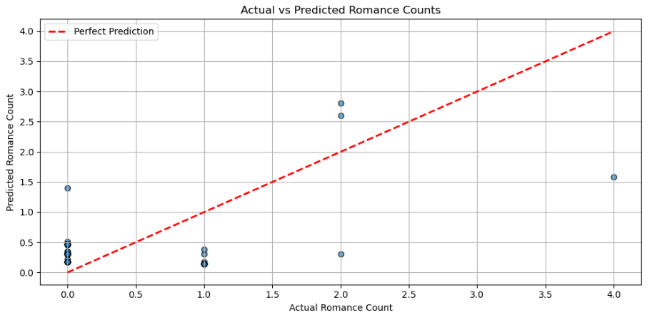
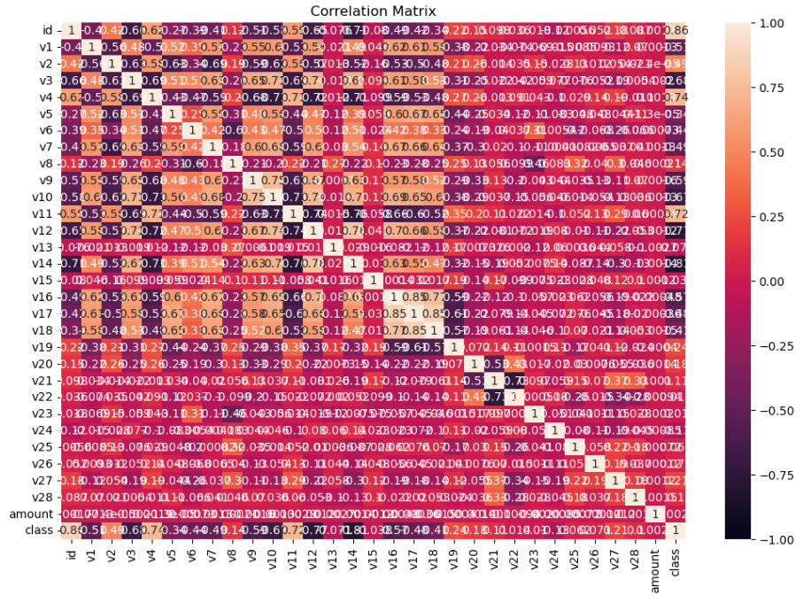
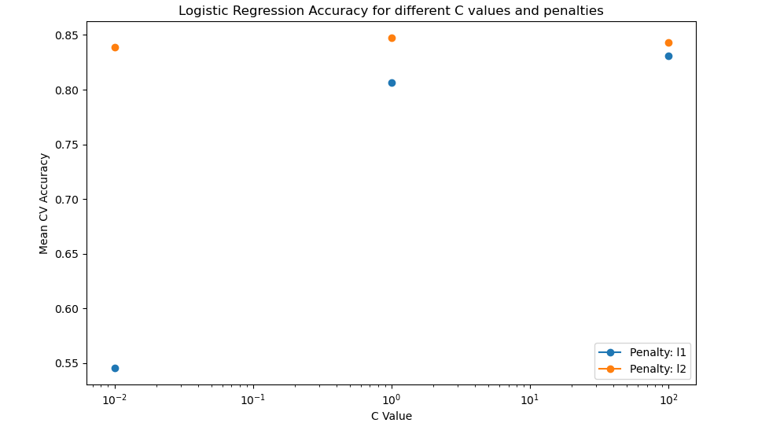

Pop Culture Research: Predicting Romance Theme Word Counts
Linear Regression, Data Collection and Cleaning, Python, Data Visualization
In this project, I implemented a linear regression model with a mean squared error (MSE) of 0.329, which compared word frequency among different literary themes. I analyzed over 200 books by Nora Roberts, processing more than 1,000 unique word occurrences tied to feminist ideologies. Additionally, I extracted and synthesized Roberts’ philosophy of a "good life," advancing gender equality in the context of literary research.

Intrusion Detection Report: NIDS Classification
Snort, Classification Report
In this project, I evaluated the performance of the Snort Network Intrusion Detection System (NIDS) in distinguishing between malicious and legitimate traffic across various scenarios. I focused on key metrics like precision, recall, F1-score, and accuracy to assess the effectiveness of predefined Snort rules in detecting simulated cyberattacks and normal user activities.

Data Analysis: Credit Card Fraud
SQL, Python, pandas, matplotlib, seaborn
In this project, "Credit Card Dataset Analysis," I aim to analyze credit card fraud trends using a dataset of 568,630 transactions made by European cardholders in 2023. I utilize SQL for data manipulation and analysis, along with Python libraries such as Seaborn and Matplotlib for visualizing the results. I focuses on identifying use cases, shortcomings, and patterns in fraud detection by analyzing anonymized predictive features and transaction classes.

Application: Weather and Map Locator Website
Front-end Development, JavaScript, HTML, CSS, Restful APIs
In this project, "Weather and Map Locator," I use RESTful APIs to retrieve the weather and location of a user-entered city. This project uses JavaScript, HTML, and CSS to build the website.

Data Analysis: Degree Distributions of Busiest Airports
Rust, Degree Distribution
In this project, I analyzed the busiest airports by using degree distribution to quantify airport connectivity based on routes. I demonstrated my ability to process large datasets, analyze network statistics, and implement graph algorithms like Breadth-First Search for finding the shortest path between airports. The project highlights my expertise in Rust and graph theory applied to real-world transportation data.

Data Analysis: Predicting Heart Attacks Model
Python, pandas, matplotlib, scikit-learn
In this heart attack prediction project, I utilized decision trees, logistic regression, and k-nearest neighbors to develop machine learning models that predict heart attack likelihood. By handling a medical dataset, I demonstrated my skills in feature selection, model comparison, and evaluation using accuracy metrics. This project showcases my ability to apply data science techniques to real-world health data, creating valuable predictive tools.
Machine Learning: AI 8-Puzzle Solver
Python, Breadth-First Search, Depth-First Search
In this project, I developed an artificial intelligence algorithm to solve random 8-puzzle games using five different algorithms, including A* and Breadth-First Search, achieving solutions in under 0.1 seconds. I demonstrated my expertise in AI problem-solving and algorithm optimization. This project showcases my ability to apply advanced search techniques in Python to solve complex computational puzzles efficiently.